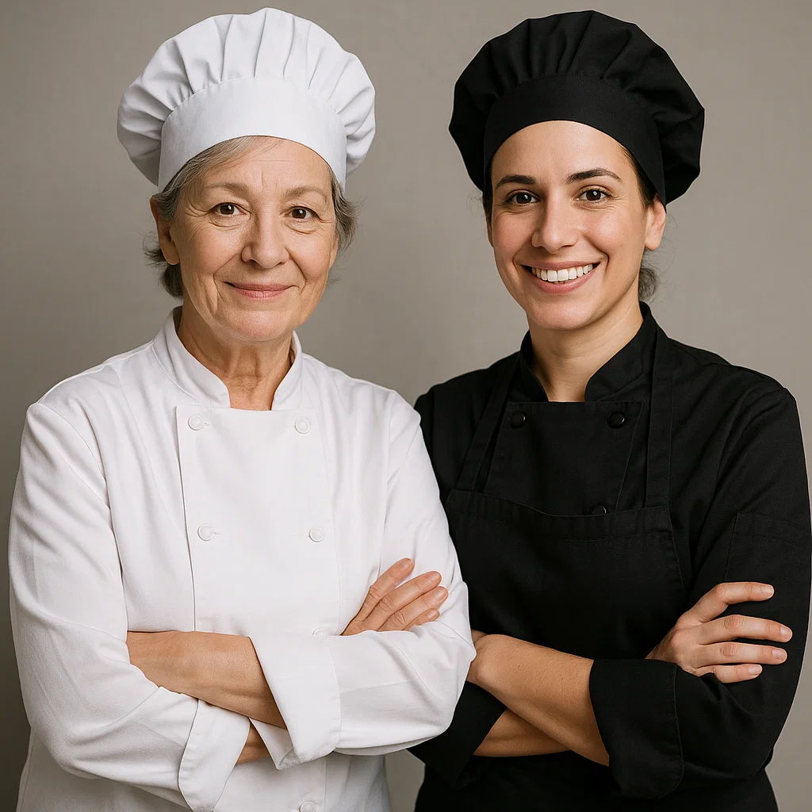
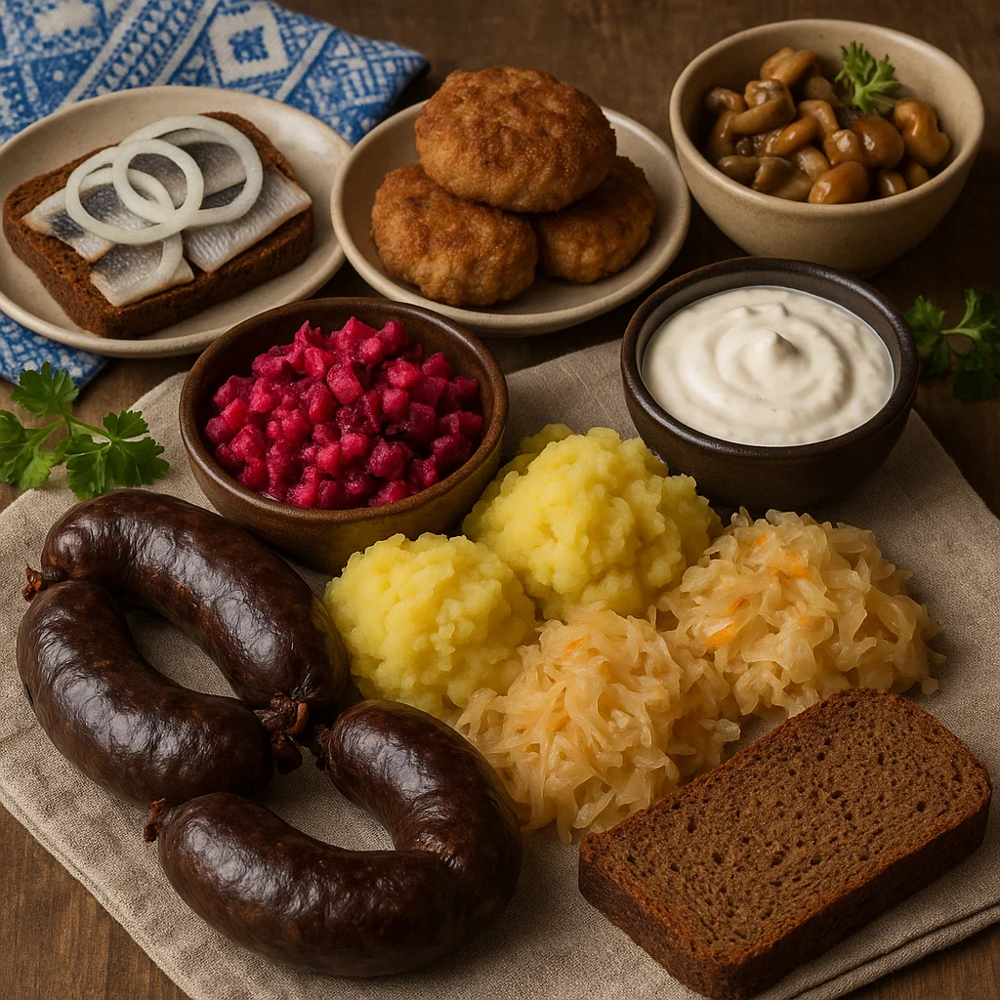
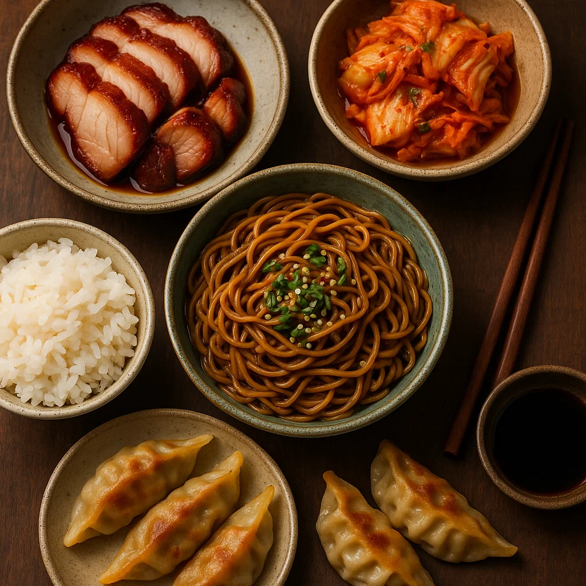
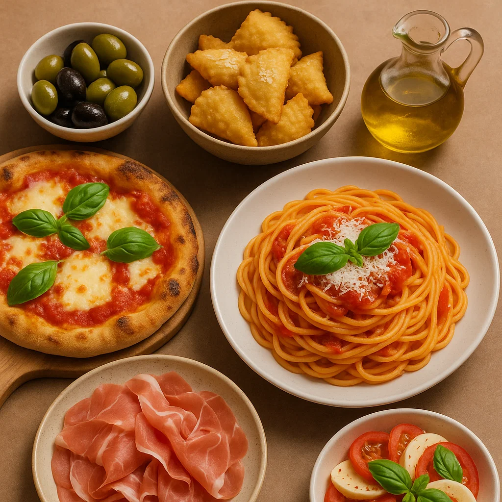

Meist
Meie toidublogi sündis kahe kirgliku naiskoka unistusest jagada oma armastust hea toidu vastu. Siit leiad retsepte nii igapäevaseks kokkamiseks kui ka pidulikeks hetkedeks, kus iga detail on hoolikalt läbi mõeldud. Meie eesmärk on pakkuda lihtsasti järgitavaid juhiseid, mis aitavad igal huvilisel saavutada maitsvaid tulemusi. Armastame katsetada erinevaid kööke, kuid väärtustame ka koduseid maitseid, mis toovad lauale soojust ja lähedust. Toiduga loome meeldejäävaid hetki ja usume, et iga roog jutustab oma lugu. Lisaks retseptidele jagame nippe ja väikseid köögisaladusi, mis muudavad kokkamise nauditavaks. Loodame, et leiad siit inspiratsiooni ja julgust katsetada.


Eesti

Aasia

Itaalia